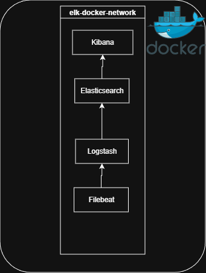

The ELK Stack is a log platform made of three tools: Elasticsearch stores and indexes events, Logstash receives and parses them, and Kibana is the web UI for searching and dashboards. Filebeat is a lightweight agent that reads log files and ships them into the pipeline.
Project objective
Build a self-contained lab that starts with Docker Compose and can:
- Collect logs from every Docker container on the host
- Collect Linux syslog and auth logs
- Parse JSON and Apache/Nginx access logs in Logstash
- Search everything in Kibana behind a login
Prerequisites
| Tool | Minimum version |
|---|---|
| Docker Engine | 24+ |
| Docker Compose v2 | 2.24+ |
Elasticsearch needs a higher memory-map limit on Linux hosts:
sudo sysctl -w vm.max_map_count=262144 # Make it permanent echo "vm.max_map_count=262144" | sudo tee -a /etc/sysctl.conf
Clone and configure
git clone https://github.com/jkapsalis/ELK-stack-setup-docker.git cd ELK-stack-setup-docker
. ├── docker-compose.yml # orchestration ├── setup.ps1 # one-time kibana_system password ├── filebeat/config/filebeat.yml ├── kibana/config/kibana.yml └── logstash/ ├── config/logstash.yml └── pipeline/logstash.conf # edit your pipeline here
Compose reads secrets and heap sizes from .env. Every value has a default, so change at least the passwords:
# .env — keep this file out of git ELASTIC_PASSWORD=change-me-elastic KIBANA_PASSWORD=change-me-kibana KIBANA_ENCRYPTION_KEY=any-random-string-of-32-characters ES_HEAP=512m LS_HEAP=256m
512m for Elasticsearch and 256m for Logstash is enough.Start Elasticsearch first
docker compose up -d elasticsearch # Load .env into your shell so the commands below can use the passwords set -a; source .env; set +a # Wait until the health check reports green or yellow curl -u elastic:$ELASTIC_PASSWORD http://localhost:9200/_cluster/health?pretty "status" : "yellow"
The compose file gives Elasticsearch a health check that polls _cluster/health.
Logstash, Kibana and Filebeat use depends_on: condition: service_healthy, so they
never start against a database that isn't ready.
yellow is normal for a single node: replica shards have nowhere to go.Set the kibana_system password
Kibana 8 refuses to connect as the elastic superuser. It logs in as the built-in
kibana_system user, whose password must match KIBANA_PASSWORD.
The script waits for Elasticsearch, then sets it through the security API:
./setup.ps1 Elasticsearch is up. kibana_system password set.
The same call with curl, if you are not on PowerShell:
curl -u elastic:$ELASTIC_PASSWORD \
-X POST http://localhost:9200/_security/user/kibana_system/_password \
-H "Content-Type: application/json" \
-d "{\"password\":\"$KIBANA_PASSWORD\"}"
KIBANA_PASSWORD later, run the script again.Start the full stack
docker compose up -d docker compose ps
Open http://localhost:5601 and log in as elastic with your ELASTIC_PASSWORD.
| Service | Port | Purpose |
|---|---|---|
| Elasticsearch | 9200 | REST API |
| Elasticsearch | 9300 | Node transport |
| Kibana | 5601 | Web UI |
| Logstash | 5044 | Beats input |
| Logstash | 5000 | TCP JSON input |
| Logstash | 9600 | Monitoring API |
How the pipeline works
Filebeat runs as root with the Docker log directory and socket mounted read-only, so it can read every container's logs and tag them with container metadata:
filebeat.inputs: - type: container paths: - "/var/lib/docker/containers/*/*.log" processors: - add_docker_metadata: host: "unix:///var/run/docker.sock" - type: log paths: - /var/log/syslog - /var/log/auth.log fields: log_type: syslog output.logstash: hosts: ["logstash:5044"] # Alternative: bypass Logstash and write straight to Elasticsearch. # Filebeat allows only ONE output, so comment out output.logstash first. # output.elasticsearch: # hosts: ["http://elasticsearch:9200"]
Logstash listens for Beats on 5044 and JSON lines on 5000, then:
- Tags container events with
log_source: docker - Parses messages that start with
{as JSON - Groks access logs with
COMBINEDAPACHELOG - Drops empty messages
filter { if [log][file][path] =~ "access" { grok { match => { "message" => "%{COMBINEDAPACHELOG}" } tag_on_failure => ["_grok_parse_failure"] } } } output { elasticsearch { hosts => ["http://elasticsearch:9200"] index => "logstash-%{+YYYY.MM.dd}" } }
After editing the pipeline, restart only Logstash:
docker compose restart logstash
Send test data
# JSON over TCP into Logstash echo '{"level":"info","message":"Hello ELK","app":"test"}' | nc localhost 5000 # Or index a document directly in Elasticsearch curl -X POST http://localhost:9200/my-index/_doc \ -u elastic:$ELASTIC_PASSWORD \ -H "Content-Type: application/json" \ -d '{"message":"test event"}'
In Kibana, create a data view for logstash-* under Stack Management → Data Views, then open Discover.
Useful commands
# Follow all logs docker compose logs -f # Stop everything, keep data volumes docker compose down # Stop and DELETE all data docker compose down -v # Restart one service docker compose restart logstash
